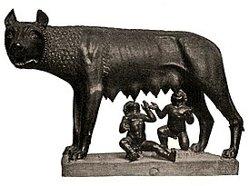
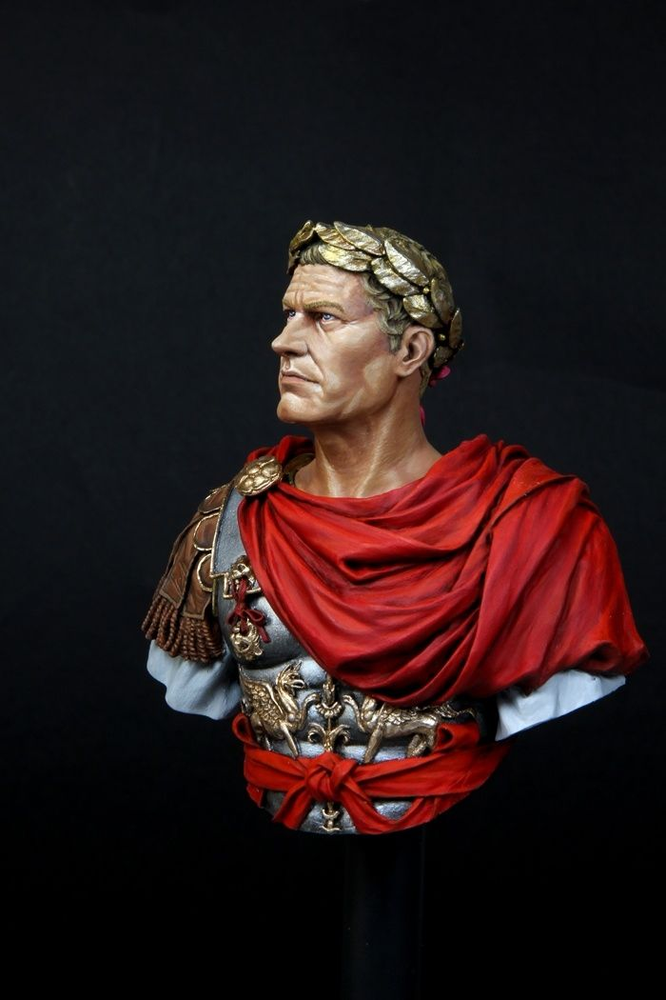

Початок
Старода́вній Рим — одна з цивілізацій Давнього світу та античності, отримала свою назву від головного міста — Рима, яке в свою чергу назване на честь легендарного засновника — Ромула. Стародавній Рим був цивілізацією, яка виросла з маленької землеробської громади, заснованої на Апеннінському півострові ще в X столітті до н. е. Центр Рима формувався в межах болотистої рівнини, обмеженої Капітолієм, Палатином і Квіріналом. Розміщена вздовж Середземного моря, Римська держава з часом стала однією з найбільших імперій Давнього світу.
Армія

Римське військо майже за весь час свого існування було, як доводить практика, найпередовішим серед інших держав Давнього світу, пройшовши шлях від народного ополчення до професійної регулярної піхоти та кінноти з численними допоміжними підрозділами та союзницькими формуваннями. При цьому головною бойовою силою завжди була піхота (в епоху Пунічних воєн фактично з'явилася морська піхота). Основними перевагами римської армії були мобільність, гнучкість та тактичні навички, що дозволяло їй діяти в умовах різного рельєфу місцевості та в суворих погодних умовах.
Види легіонерів:
- Гастати
- Принципи
- Тріарії
Цезар
Гай Ю́лій Це́зар (лат. Gaius Iulius Caesar; 12/13 липня 100 до н. е. — 15 березня 44 до н. е.) — давньоримський державний і політичний діяч, полководець, письменник. Римський консул (59, 48, 46, 45 і 44 до н.е), диктатор (49, 48—47 і 46—44 до н. е.), великий понтифік (з 63 до н. е.). Один із найвидатніших полководців античності. Докорінно змінив політично-суспільний і культурний ландшафт стародавнього Середземномор'я і Західної Європи. Представник римського патриціанського роду Юліїв.
Занепад
Падіння Західної Римської імперії (падіння Римської імперії, падіння Риму) — довготривалий процес занепаду Західної Римської імперії, в результаті якого держава була неспроможна керувати підвладними їй територіями та припинила своє існування. У 410 році вестготи захопили Рим, а 4 вересня 476 року останній імператор Західної Римської імперії Ромул Август відрікся престолу. Таким чином завершилося багатовікове панування Риму.